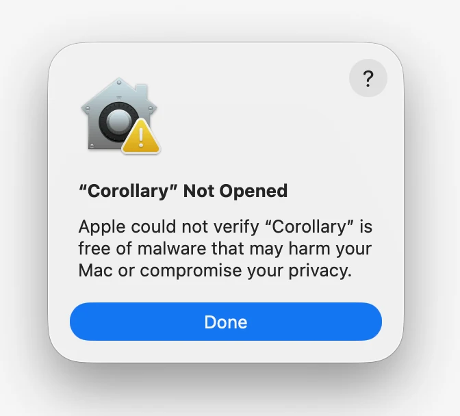
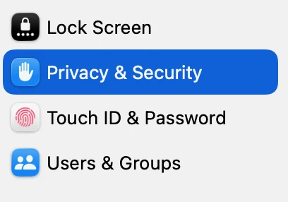
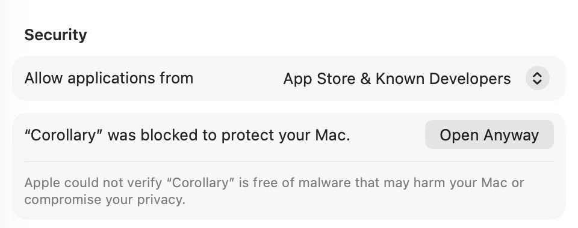

Download Corollary
Free and open source, for Macs with Apple silicon.
What you need
- A Mac with Apple silicon (M1 or later) and macOS 14 or later.
- For the built-in AI: macOS 26 or later with Apple Intelligence turned on. Without it, everything else works, and ⌘K can use Ollama.
- About 400 MB of space for TeX, if you don’t already have it.
The first time you open it
- Open the .dmg, drag Corollary into Applications, then open it.
-
Corollary isn’t notarized by Apple yet, so macOS shows the warning it uses for any app that isn’t registered with Apple. It doesn’t mean anything was found. To open it (you only do this once; updates install themselves):

Click Done 
System Settings › Privacy & Security 
Scroll down, click Open Anyway Or paste this into Terminal, then open Corollary as usual:
- Click Get started. If you don’t have TeX, Corollary installs it for you in about two minutes. You don’t need Homebrew or your password.
- Open a project folder, or drop in a zip from Overleaf or Prism. Then select some text and press ⌘K.
Build it yourself
The code is on GitHub. You’ll need Rust, Node and pnpm; the on-device AI helper also needs Xcode 26.4 or later.